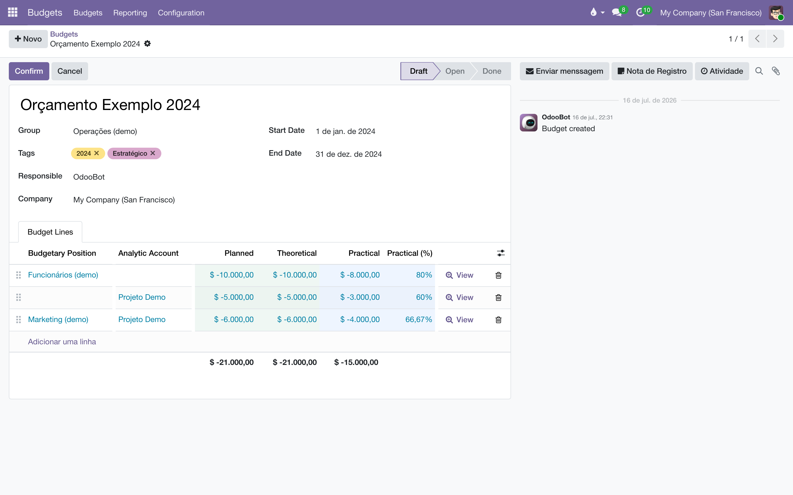

Compare o que a casa planejou gastar (ou receber) com o que de fato aconteceu na contabilidade — por conta analítica ou direto do Razão, sem depender da versão Enterprise do Odoo.
Um orçamento é um período (data inicial e final) com uma lista de linhas. Cada linha diz "planejo este valor para esta rubrica" — e o sistema preenche, sozinho, quanto já se realizou. Quatro medidas convivem em cada linha:
| Medida | Rótulo na tela | O que é |
|---|---|---|
| Planejado | Planned | O valor que você digitou. |
| Teórico | Theoretical | O planejado proporcional aos dias já decorridos do período. Em julho, metade do orçamento do ano "deveria" ter acontecido. |
| Realizado | Practical | O que de fato foi lançado e confirmado na contabilidade dentro do período. |
| Programado | Programmed | Realizado + lançamentos ainda em rascunho. Útil para quem digita o futuro antes de confirmar. Nasce escondido no seletor de colunas. |
Os valores seguem a convenção de resultado: receita entra positiva, despesa entra negativa, e o total da linha de rodapé é o resultado líquido — o mesmo número que o Razão daria. Nas linhas, a cor avisa: vermelho quando o realizado está abaixo do planejado, azul quando está acima.
Cada linha escolhe de onde vem o realizado, e essa escolha é a decisão mais importante do módulo:
A interface deste módulo ainda está em inglês (a tradução para o português é pendência conhecida). Os caminhos de menu abaixo citam os rótulos como aparecem na tela.
Grupos de acesso: o módulo cria Budget: User e Budget: Manager (o gerente inclui o usuário). O menu só aparece para quem tem pelo menos o grupo de usuário — é assim que os papéis de acesso do Liber decidem quem vê os boards de orçamento. Em bases com mais de uma empresa, cada um vê apenas os orçamentos das empresas a que tem acesso.
Dependências: apenas a contabilidade e a contabilidade analítica do Odoo Community — nenhum módulo Enterprise.
Cadastros de apoio, todos em :
Toda linha precisa de uma fonte de realizado: uma posição orçamentária ou pelo menos uma conta analítica. Uma linha sem nenhuma das duas é recusada ao salvar. Quando a linha tem as duas, vale a posição (o modo Razão).
Orçamento "2026" com três linhas: Receita de vendas (posição com as contas de receita, Planned +900.000), Gráfica (posição com as contas de custo industrial, Planned −300.000) e Marketing — bonificações (conta analítica da verba de marketing, Planned −40.000). O rodapé soma o resultado líquido planejado: +560.000 — e a coluna Practical mostra o resultado que de fato está se formando.
Não há nada para "rodar": o realizado é recalculado na hora, a cada abertura da tela, a partir da contabilidade.

O orçamento percorre Draft → Open → Done, com Canceled como saída lateral e Revised para quem foi substituído:
Regras que o sistema garante:
Use a revisão em vez de editar um orçamento aberto no meio do ano: o original congelado conta a história do que se planejou em janeiro, e a revisão conta o replanejamento — os dois consultáveis.
Cada linha do relatório corresponde a uma linha de orçamento, com os mesmos números das telas — a mesma convenção de sinal, as mesmas fontes de realizado.
Minha linha analítica está sempre zerada.
O modo analítico só enxerga lançamentos que carregam a conta analítica — uma fatura sem distribuição analítica não conta. Para orçar sobre a contabilidade que já existe, sem re-etiquetar nada, use uma posição orçamentária: ela lê direto do Razão, inclusive o passado.
Realizado e Programado mostram números diferentes. Qual vale?
Practical só soma lançamentos confirmados; Programmed inclui também os rascunhos. Para prestar contas, use o Practical. O Programmed serve a quem lança o futuro em rascunho e quer ver o comprometido.
Por que minha despesa aparece negativa?
É a convenção de resultado: receita +, despesa −. Assim o total de um orçamento misto (receitas e despesas) é o resultado líquido, que bate com o Razão — em vez de uma soma sem significado.
Não consigo excluir um orçamento.
Ele já esteve aberto. Volte-o a rascunho (Reset to Draft) se realmente for o caso, ou cancele-o — o histórico agradece.
Quem consegue ver os orçamentos?
Só quem tem os grupos de orçamento. Com os papéis de acesso do Liber, isso significa Direção e Financeiro/Gerente — as demais funções nem veem o menu.
Todo documento do sistema carrega um prefixo na numeração — CO/2026/00001 é um acerto, AT/2026/00042 é um chamado. A lista é a mesma em todos os manuais:
| Prefixo | O que é |
|---|---|
C | Pedido de consignação: o pedido que põe livros na prateleira do cliente — C00001, no lugar do S da venda comum. |
CO/ | Consignação, o documento do acerto: registra o que o cliente vendeu e vira venda — CO/2026/00001. |
CR/ | Retorno de consignação: o documento que pede a devolução dos exemplares da prateleira — CR/2026/00001. |
CA | Auditoria de consignação: reconstrói o saldo da prateleira do cliente pelas notas fiscais e registra o ajuste — CA00001. |
CP/ | Campanha de consignação: o sortimento-alvo por canal — quantos exemplares de cada título as prateleiras devem ter — CP/2026/0001. |
AC/ | Acordo de Consignação: o contrato com a livraria, dono da prateleira — AC/2026/00001. |
COM/ | A série das transferências de remessa e entrega de consignação do armazém — COM/2026/00001. |
RET/ | A série das transferências de retorno de consignação, da prateleira ao armazém — RET/2026/00001. |
REM/ | Remessa: a nota de simples remessa, sem cobrança — a numeração vem do diário fiscal REM. |
COL/ | Coleta: o lote do pedido de coleta às transportadoras — COL/2026/00001. |
AT/ | Atendimento: o chamado nascido do e-mail comercial — AT/2026/00001. |
MBX/ | O lote de envio de metadados à Metabooks — MBX/2026/00001. |
Impostos de Direitos Autorais/ | O lote da fatura acumuladora do IRRF retido dos autores no mês. |
Royalties entre Empresas/ | O lote da fatura acumuladora de royalties entre as empresas da casa. |
| Do próprio Odoo | |
S | Pedido de venda comum — S00001; o pedido de consignação usa o C no lugar. |
WH/OUT | Entrega comum do armazém: a transferência de saída padrão do Odoo. |
WH/IN | Recebimento do armazém: a transferência de entrada padrão do Odoo. |
Manual completo, com busca e as demais páginas: Orçamento.